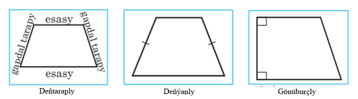
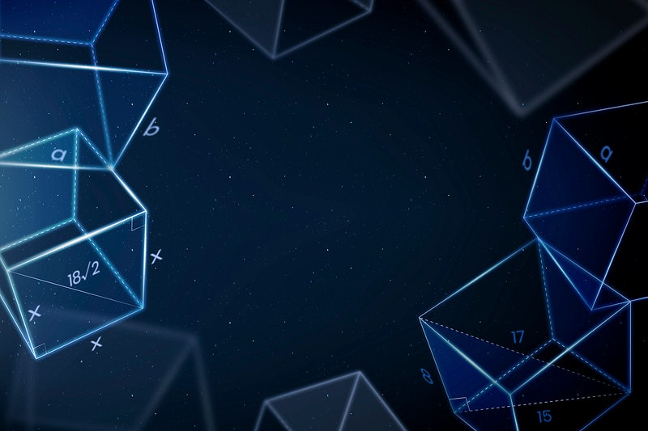

1. Köpburçluklar
Köpburçluk
Çatyk taraplary (AB we BC, BC we CD, ... FA
we AB) bir göni çyzygyň üstünde ýatmaýan, çatyk däl taraplarynyň umumy nokady bolmadyk AB, BC,
CD,...EF, FA kesimlerden düzülen geometrik figura köpburçluk diýilýär. A, B, C,... E, F nokatlara köpburçlugyň depeleri, AB, BC,... EF, FA kesimlere bolsa köpburçlugyň taraplary diýilýär
Islendik köpburçluk tekizligi iki bölege bölýär. Olaryň birine köp burçlugyň içki ýaýlasy, beýlekisine daşky ýaýlasy diýilýär(3-nji surat)
Eger köpburçluk onuň islendik tarapy arkaly geçýän göni çyzykdan bir tarapda ýatýan bolsa,onda oňa güberçek köpburçluk diýilýär.
Teorema:Güberçek n burçlugyň burçlarynyň jemi
180°(n – 2) deňdir.
Subudy: Berlen n-burçlugyň bir depesinden mümkin bolan ähli diagonallaryny geçirýäs, n-2 sany üçburçluk alynar.Üçburçluklaryň her biriniň burçlarynyň jemi 180°-a deň, üçburçluklaryň sany bolsa n – 2 deňdir.Netijede 180°(n-2) deň bolar.SEŞ
Parallelogram
Garşylykly taraplary jübüt-jübütden parallel bolan dörtburçluga parallelogram diýilýär. Parallelogramyň käbir häsiýetleri:
1. Parallelogramyň diagonaly ony deň iki üçburçluga bölýär.
2. Parallelogramyň garşylykly taraplary we garşylykly burçlary özara deňdirler.
3. Parallelogramyň diagonallary kesişme nokadynda deň ýarpa bölünýärler.
Parallelogramyň nyşanlary:
1. Eger dörtburçlugyň garşylykly iki tarapy deň we parallel bolsa, onda ol dörtburçluk parallelogramdyr.
2. Eger dörtburçlugyň garşylykly taraplary jübütjübütden deň bolsalar, onda ol dörtburçluk parallelogramdyr..
3. Eger dörtburçlugyň diagonallary kesişseler we kesişme nokadynda deň ýarpa bölünýän bolsalar, onda ol dörtburçluk parallelogramdyr.
Trapesiýa.
Iki tarapy parallel,beýleki iki tarapy bolsa parallel bolmadyk dörtburçluga trapesiýa diýilýär.

Falesiň teoremasy
Eger burçuň taraplaryny kesýän parallel göni çyzyklar burçuň bir tarapynda deň kesimleri kesip alýan bolsalar, onda olar onuň beýleki tarapynda hem deň kesimleri kesip alarlar.

Gönüburçluk
Ähli burçlary göni burç bolan parallelograma gönüburçluk diýilýär. Gönüburçluk parallelogram bolany üçin, ol parallelogramyň ähli häsiýetlerine eýedir.
Gönüburçlugyň aýratyn häsiýeti: Gönüburçlugyň diagonallary deňdir.

SQUARE

RECTANGLE

PARALLELOGRAM

LOZENGE

TRAPEZOID

CONVEX QUADRILATERAL

CIRCLE

SEGMENT OF CIRCLE

SECTOR OF CIRCLE
b: Arc length

REGULAR POLYGON OF N SIDES

HEXAGON

2. 3D SHAPES
SPHERE
V: Volume, A: Surface Area

SPHERICAL CAP

SPHERICAL SEGMENT

SPHERICAL SECTOR

TORUS

CYLINDER
A: Lateral surface area

CONE
A: Lateral surface area

FRUSTUM OF RIGHT CIRCULAR CONE

PYRAMID
A: Base Area

CUBOID
A: Surface Area

TRIANGULAR PRISM